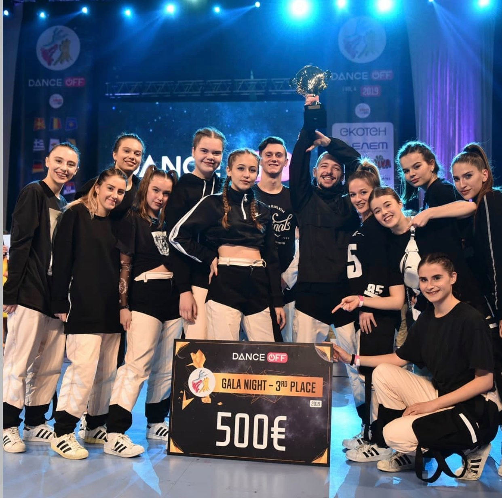

EXPERIENCE
Dance, Studio Break a Leg, Skopje, Macedonia
September 2012 - PresentI have been a part of 2 different dance studios in the past 11 years since I have always loved dancing and expressing my feelings through movement. I am regularly participating in many international competitions and I have many awards. I do mainly hip hop, but also contemporary, jazz, electric boogie, breakdance, etc. When I was part of the junior crew, I was the leader of the group. Starting from January 2019, I begun teaching hip hop to kids aged 4 to 6 and 7 to 12. I often substitute for the junior and senior groups too. I prepare them for competitions and performances. I additionally have a C license for teaching modern dances by the Macedonian Association of Modern Dances.
Gymnastics, Sports Center Partizan - Orce Nikolov, Skopje, Macedonia
September 20016 - June 2017I do gymnastics to improve my flexibility and strength, which also contributes to my development as a dancer with all of the gymnastics tricks and movements.
Fair Play Dance Camp, Krakow, Poland
August 2018, August 2019For the past two years, I have been a part of the biggest educational dance festival in Europe, where we have classes from 9 am to 7 pm. I take dance classes from some of the greatest artists and choreographers, and I get to learn different styles.
AWARDS
Dance OFF 2019, Skopje, Macedonia
First Place in the category Hip Hop Formation Adults
Mediterranean Best Dance 2019, Bar, Montenegro
First Place in the categories Hip Hop Formation Adults and Hip Hop Solo Female Adults
International Dance Organization European Championship 2017, Wałbrzych, Poland
Second Place in the category Electric Boogie Duos Juniors
Street Dance World Championship 2016, Graz, Austria
Second Place in the category Hip Hop Small Groups Juniors
PROJECTS
Children’s Oncology Clinic, Skopje, Macedonia — Volunteer
This project had the goal to help kids with cancer and make their schedules a little more interesting by doing creative activities and playing games.
Center for Roma Children from the Suto Orizari Street, Skopje, Macedonia — Organizer, Volunteer
Together with three other students, I did a project for the Roma kids for which we organized a humanitarian concert and used the money to buy them the necessary medication and a microwave. We also went to the center each week and taught them English, Mathematics, Biology and helped them with their homework. This was designed as a part of Red Cross - PHV (Promoting Human Values).
“Food for Paws”, Veles and Skopje, Macedonia — Organizer, Volunteer
I and two other students made various cakes and pastries, which we sold at a bake sale we organized in Nova International High School. All proceeds went to Saving Macedonian Strays dog shelter in Veles. We managed to collect around 4,000MKD (around 65EUR).
